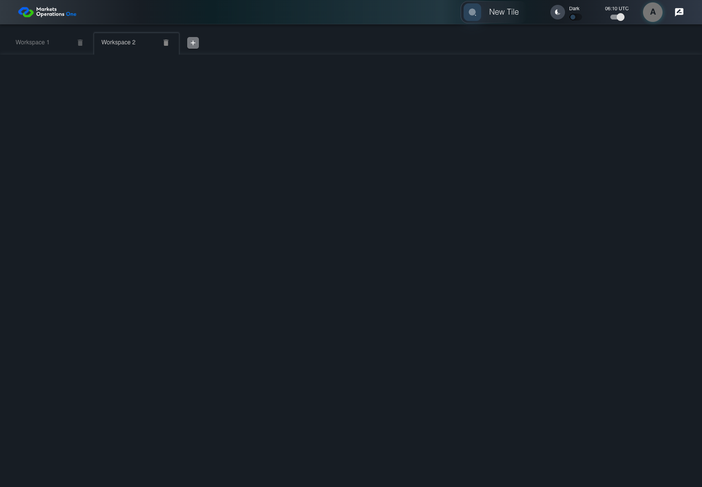

UI-SHL-006 switch the active workspace
PASS · application/run-050/ui-shl-006-switch-the-active-workspace-58e2689e9511-attempt-1 · ACTUAL_APPLICATION_LOCAL_SERVICES
Actual current React shell and browser storage. Controlled login/validation/activity renewal, UI-USER-01 permissions, catalog, and SystemJS React component. Markers, counter, and registered refresh callback are controlled fixture observations. No real business tenant or BFF authorization acceptance.
2026-10-22T06:10:57.448Z to 2026-10-22T06:11:00.568Z
Assertions and result · Artifact manifest · Exact run inputs and source hashes
Result SHA-256:28232c8f5364a68499771ae8958e716214c14518a6426fa1d595a23be65d1b8aScreenshot capture: CAPTURED. Named frames: 7.
Step screenshot evidence: COMPLETE. 6/6 canonical steps have execution screenshots.
Canonical step timeline
Given User A is authenticated as fixture UI-USER-01 with the case-specific permissions
Execution: PASSED.1. step-01 Visible state after step 1: Given User A is authenticated as fixture UI-USER-01 with the case-specific permissions
2026-10-22T06:10:58.833Z · 1440×1000
Step: /Users/lushevol/code/github/ratan-release-impact/workbench/tasks/ui-test-coverage-20261022/test-cases.md:5558
SHA-256:a2c4e947bcae2ea8cb6ebf5b07314a14f87b1fa7609ea70207ce53aab94b3257And W1 and W2 exist and W1 is selected
Execution: PASSED.2. step-02 Visible state after step 2: And W1 and W2 exist and W1 is selected
2026-10-22T06:10:58.914Z · 1440×1000
Step: /Users/lushevol/code/github/ratan-release-impact/workbench/tasks/ui-test-coverage-20261022/test-cases.md:5559
SHA-256:b06e1eac55138d22702f32fb2cfd9185313a3220b0065701e46fdb4278439058When User A clicks tab with source identity "Workspace Name textbox value Workspace 2" inside the shell tablist named "workspaces"
Execution: PASSED.
3. step-03 Visible state after step 3: When User A clicks tab with source identity "Workspace Name textbox value Workspace 2" inside the shell tablist named "workspaces"
2026-10-22T06:10:59.048Z · 1440×1000
Step: /Users/lushevol/code/github/ratan-release-impact/workbench/tasks/ui-test-coverage-20261022/test-cases.md:5560
SHA-256:607281849e9bf9ce3636a80112e1b8d9f91cb2eeabacf82cb6c4980df7bd307cThen tab with source identity "Workspace Name textbox value Workspace 2" inside the shell tablist named "workspaces" is selected
Execution: PASSED.
4. step-04 Visible state after step 4: Then tab with source identity "Workspace Name textbox value Workspace 2" inside the shell tablist named "workspaces" is selected
2026-10-22T06:10:59.131Z · 1440×1000
Step: /Users/lushevol/code/github/ratan-release-impact/workbench/tasks/ui-test-coverage-20261022/test-cases.md:5561
SHA-256:607281849e9bf9ce3636a80112e1b8d9f91cb2eeabacf82cb6c4980df7bd307cAnd text with text "Panel Two" inside the selected W2 tabpanel is visible
Execution: PASSED.5. step-05 Visible state after step 5: And text with text "Panel Two" inside the selected W2 tabpanel is visible
2026-10-22T06:10:59.987Z · 1440×1000
Step: /Users/lushevol/code/github/ratan-release-impact/workbench/tasks/ui-test-coverage-20261022/test-cases.md:5562
SHA-256:c2a338641f412dd5aab3e3beb4cb4462bf9a82385a21cc3a966f3d8c4111e41bAnd tabpanel with source identity "workspaces-tabpanel-<current index of W1>" inside the authenticated shell is hidden
Execution: PASSED.
6. step-06 Visible state after step 6: And tabpanel with source identity "workspaces-tabpanel-<current index of W1>" inside the authenticated shell is hidden
2026-10-22T06:11:00.072Z · 1440×1000
Step: /Users/lushevol/code/github/ratan-release-impact/workbench/tasks/ui-test-coverage-20261022/test-cases.md:5563
SHA-256:c2a338641f412dd5aab3e3beb4cb4462bf9a82385a21cc3a966f3d8c4111e41b
Additional named frames

The final visible state after the named test assertions.
2026-10-22T06:11:00.187Z · 1440×1000Step: Test source: /Users/lushevol/code/github/ratan-release-impact/workbench/e2e/audit-specs/shell-expanded.spec.ts:12
SHA-256:
c2a338641f412dd5aab3e3beb4cb4462bf9a82385a21cc3a966f3d8c4111e41bScreenshots establish visible state only. Assertions and traces support functional claims.